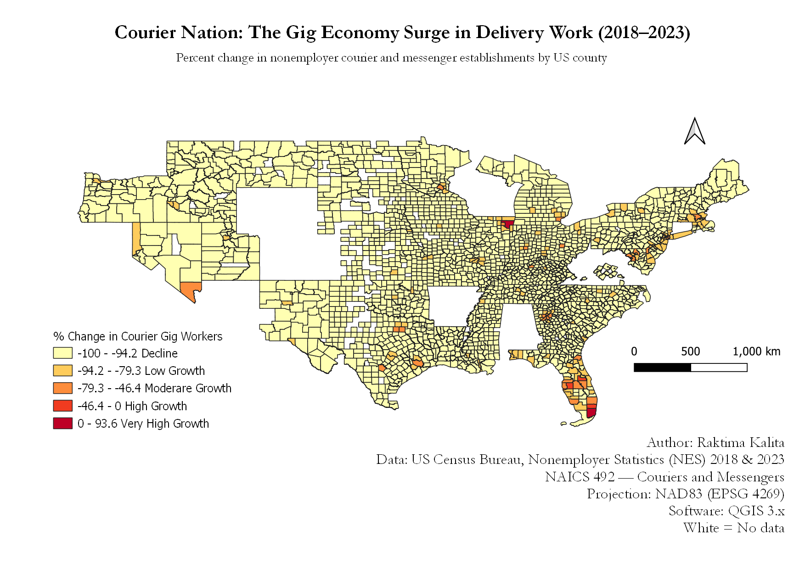

The Map

Figure 1. Percent change in nonemployer courier and messenger establishments (NAICS 492) by US county, 2018–2023. Data: US Census Bureau Nonemployer Statistics. Map by Raktima Kalita.
About This Map
The rise of app-based delivery platforms like DoorDash, Amazon Flex, Instacart, and UPS independent contracting has transformed the American labor market. Millions of workers now earn income as independent contractors — classified not as employees but as nonemployer businesses. This map visualizes where that transformation has been most dramatic across the United States between 2018 and 2023.
Using data from the US Census Bureau's Nonemployer Statistics (NES) program, this map shows the percent change in courier and messenger establishments (NAICS industry code 492) at the county level. A county colored dark red experienced explosive growth in gig delivery work. A county in grey had no data or saw a decline.
This map was created as part of a final project for a GIS mapping course, using QGIS for data processing and cartographic design, and published via GitHub Pages.
Map Metadata
| Author | Raktima Kalita |
| Projection | NAD83 — Geographic Coordinate System (EPSG 4269) |
| Original Data Projection | NAD83 (EPSG 4269) — US Census TIGER shapefiles |
| Software Used | QGIS 3.x, Google Sheets, GitHub Pages |
| Data Years | 2018 and 2023 |
| Industry Code | NAICS 492 — Couriers and Messengers |
| Geography | US Counties (approx. 2,959 counties with data) |
| Color Scheme | Yellow to Red sequential ramp (YlOrRd) — suitable for showing magnitude of growth |
| No Data | Counties shown in grey had no reported courier establishments in one or both years |
| Map Resolutions | 1,200px (web display) and 8,000px (high resolution download) |
Key Findings
What the map tells us
- Courier and messenger gig work grew dramatically across the US between 2018 and 2023, driven by the rise of app-based delivery platforms.
- Growth was not limited to large urban counties — many suburban and mid-sized metro counties also saw significant increases.
- Some rural counties saw little to no change, reflecting limited platform availability outside major markets.
- A small number of counties experienced declines, possibly due to market consolidation or changes in platform operations.
- The geographic pattern reflects broader trends in the platform economy — growth follows population density and internet infrastructure.
Data Source
The primary data source is the US Census Bureau Nonemployer Statistics (NES) program, which tracks businesses with no paid employees — the primary way gig workers appear in government data. The specific industry filtered is NAICS 492 — Couriers and Messengers.
County boundary shapefiles were downloaded from the US Census Bureau TIGER/Line Shapefiles program (2022 release).
| NES 2023 Data | census.gov — Nonemployer Statistics Datasets |
| NES 2018 Data | census.gov — Nonemployer Statistics Datasets |
| County Shapefile | census.gov — TIGER/Line Shapefiles |
View the full project repository, including raw data, cleaned data, and QGIS project file:
View on GitHub → raktimakalita54-blip/courier-nation-map